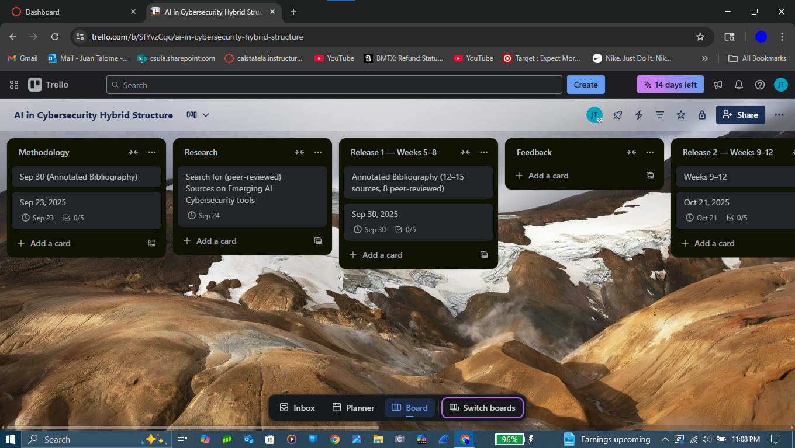

1. Project Title and Description
Title: The Role of Artificial Intelligence in Cybersecurity
The project I chose is to write a research paper on the role of Artificial Intelligence in cybersecurity. This research paper will focus on new emerging AI technologies and how they are being implemented in tools and cybersecurity practices.
2. Vision, Mission and Strategy
Vision: Develop a clear and well researched paper that explains how artificial intelligence is being applied in cybersecurity and what value it provides.
Mission: Gather and review reliable academic and industry sources to understand how emerging AI technologies are being used in cybersecurity tools and practices.
Strategy: Build an annotated bibliography, analyze key findings from the sources, and use that analysis to write a structured research paper supported with evidence.
3. Business Case
This project will help me grow professionally by strengthening my research and analysis skills in the high demand area of cybersecurity. I will learn how to evaluate academic and industry sources, compare different AI tools and practices, and communicate findings clearly in both written and presentation formats. These skills will help me in future classes, internships, and job opportunities in cybersecurity.
On a personal level this project will deepen my understanding of a topic I am passionate about. Exploring how AI is changing cybersecurity will give me confidence to discuss current trends and show initiative in an area that is connected to my career goals.
4. High Level Scope
In Scope for Semester Long Project
- Literature review report on AI in cybersecurity.
- Annotated bibliography of selected sources.
- Final research paper with findings and a conclusion.
- Summary report analyzing emerging AI technologies in cybersecurity.
- Presentation slides summarizing key research outcomes.
Roadmap Items up to 6 Months After Semester Ends
- Update research paper with new information on emerging AI and cybersecurity sources.
- Expand literature review to include additional peer reviewed journals and industry papers.
- Develop a visual dashboard to present adoption trends in AI cybersecurity.
- Submit my research paper to a student journal.
Truly Out of Scope
- Develop or code a fully functional AI cybersecurity system.
- Perform real life tests with industry wide AI cybersecurity tools.
- Provide hands on cybersecurity services using AI tools.
- Conduct long term yearly studies on AI adoption trends in cybersecurity.
5. Stakeholder Register
| Stakeholder | Category | Role or Interest | Power | Interest | Engagement Strategy |
|---|---|---|---|---|---|
| Professor | Internal | Guides deliverables and evaluates work | High | High | Maintain good communication and ask for feedback. |
| National Institute of Standards and Technology (NIST) | Regulatory | Ensures best practices, compliance, and trustworthiness of AI driven cybersecurity. | High | Low | Show alignment to NIST standards in my conclusions to ensure credibility. |
| Classmates | Internal | Peer review and presentation audience | Low | High | Keep informed with periodic updates and requests for feedback |
| University Library and Research Database | Internal | Provides access to academic and industry sources | Low | High | Access quality research and consult librarians as needed |
| Cybersecurity Industry Professionals | External | Optional insights on current practices and trends | Low | High | Occasional outreach for short input when relevant |
| AI Technology Vendors | External | Background on tooling capabilities and limitations | Low | Low | Monitor public documentation and industry papers |
| Future Employers | External | Potential consumers of research outcomes, shows applied knowledge | Low | High | Highlight project on LinkedIn, discuss during career networking events. |
| General Public | External | Potential benefits by advancements in AI security | Low | High | Make sure the final paper has a clear message so the audience can benefit from my research |
Keep Satisfied
High Power, Low Interest
- National Institute of Standards and Technology (NIST)
Manage Closely
High Power, High Interest
- Professor
Monitor
Low Power, Low Interest
- AI Technology Vendors
Keep Informed
Low Power, High Interest
- Classmates
- University Library and Research Database
- Cybersecurity Industry Professionals
- Future Employers
- General Public
Project Methodology Explanation
For my methodology I chose hybrid interactive for my project. One reason I chose this method is because the structure and deadlines are fixed. This is beneficial for me because it keeps my work paced at a steady rate, which improves quality and prevents rushing everything at the end.
Another reason this methodology helps is the lower risk of misalignment with project requirements—regular feedback sessions make sure my work stays clear and aligned with the rubric. Finally, this approach is well balanced and includes everything I need to produce quality work: the schedule is not too fast-paced, but it is consistent.
Project Methodology Diagram

Project Tool Selection Explanation
Choose Your Tool. After reviewing Asana, Trello, and Microsoft Project, I have decided to use Trello for my project management tool because it best fits my needs and supports the structure of this project. Trello is easy to work with and provides features that help me visually map my hybrid methodology.
Trello is also free, and I have used it on previous projects, so the learning curve is minimal. Microsoft Project was another strong option, but its more complex features are beyond what I need right now. I also reviewed Asana and liked that it’s free, but since I have more experience with Trello, I chose it as my primary tool and would consider Asana as a second option.
- Card Templates – quickly create repeatable task structures for releases and phases.
- Checklists – break down deliverables (e.g., bibliography items, draft sections) into actionable steps.
- Calendar View – map fixed dates for hybrid iterations and deadlines to stay on pace.
Tags: Trello layout · Project methodology · Hybrid

6. Deliverables (Definition of Done, tasks, dependencies, estimates)
| Deliverable | Type | SMART Description | Definition of Done |
|---|---|---|---|
| Annotated Bibliography | Tangible | Compile 12 to 15 sources, including at least 8 peer reviewed articles. Follow APA format. Complete by September 30. |
|
| Literature Review Report | Tangible | Write a 2,500 to 3,000 word report that organizes findings. Include 10 citations and follows APA format. Complete by October 21. |
|
| Final Research Paper | Tangible | Develop a 3,000 to 3,500 word final paper that integrates previous work and follows NIST guidelines. Complete by December 2. |
|
| Summary Report on Emerging AI Technologies in Cybersecurity | Tangible | Create a 2 to 3 page executive summary covering 5 emerging AI tools in cybersecurity plus analysis. Complete by November 4. |
|
| Presentation Slides | Tangible | Prepare 10 to 12 slides that summarize the research. Each slide will have 30 words while including visuals. Completed by December 9. |
|
7. Budget Estimation
| Cost Item | Quantity/Hours | Rate/Price | Total Cost | Notes |
|---|---|---|---|---|
| LABOR COSTS | ||||
| Developer | 70 | $44.08 | $3,085.60 | Enter hours needed |
| Designer | 4 | $29.34 | $117.36 | Enter hours needed |
| Project Manager | 6 | $45.43 | $272.58 | Enter hours needed |
| Tester | 6 | $40.00 | $240.00 | Enter hours needed |
| Business Analyst | 4 | $40.98 | $163.92 | Enter hours needed if needed |
| Other Role | 0 | $0.00 | $0.00 | Add additional roles as needed |
| LABOR SUBTOTAL | $3,879.46 | |||
| EQUIPMENT/SOFTWARE | ||||
| Software Licenses | 1 | $0.00 | $0.00 | Monthly/annual cost |
| Development Tools | 1 | $0.00 | $0.00 | IDEs and frameworks |
| Testing Environment | 1 | $0.00 | $0.00 | Servers or cloud instances |
| Database Software | 0 | $0.00 | $0.00 | If needed for project |
| Other Equipment | 1 | $0.00 | $0.00 | Add as needed |
| EQUIPMENT/SOFTWARE SUBTOTAL | $0.00 | |||
| MATERIALS | ||||
| Stock Images/Media | 5 | $0.00 | $0.00 | Graphics and multimedia |
| Training Materials | 0 | $0.00 | $0.00 | User guides and documentation |
| Documentation Assets | 0 | $0.00 | $0.00 | Templates and resources |
| Other Materials | 0 | $0.00 | $0.00 | Add as needed |
| MATERIALS SUBTOTAL | $0.00 | |||
| SERVICES | ||||
| Cloud Hosting | 0 | $0.00 | $0.00 | Monthly hosting costs |
| Third-party APIs | 0 | $0.00 | $0.00 | Payment processing etc. |
| Consulting Services | 1 | $0.00 | $0.00 | External expertise |
| Security Audit | 0 | $0.00 | $0.00 | Security assessments |
| Other Services | 0 | $0.00 | $0.00 | Add as needed |
| SERVICES SUBTOTAL | $0.00 | |||
| SUBTOTAL DIRECT COSTS | $3,879.46 | Sum of all categories | ||
| Contingency Reserve (%) | 20% | $775.89 | Adjust percentage as needed | |
| TOTAL PROJECT BUDGET | $4,655.35 | Final budget amount | ||
| Category | Percent of Total |
|---|---|
| Labor | 83.3333691% |
| Equipment/Software | 0% |
| Materials | 0% |
| Services | 0% |
| Contingency | 16.6666309% |